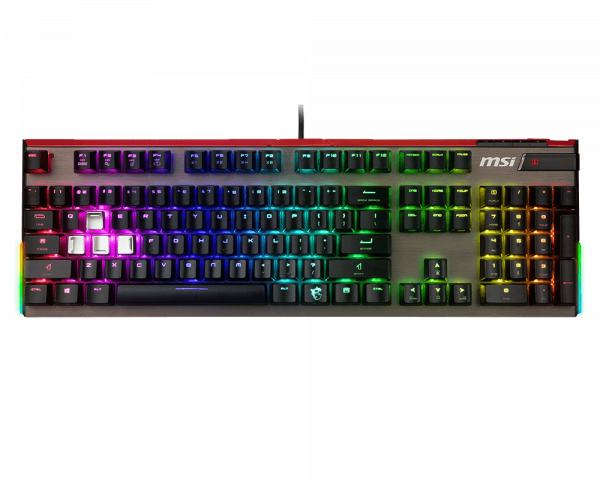

VIGOR GK80 RED
Описание товара
Выполненная на базе прочного алюминиевого шасси, клавиатура Vigor GK80 представляет собой долговечное устройство, рассчитанное на долгие годы использования. Благодаря эргономичной подставке под запястья она обеспечит комфортное положение рук во время игры и при наборе текста. Дополнительную надежность устройству придает длинный USB-кабель в оплетке, оснащенный позолоченным USB-разъемом.
Характеристики товара |
|
|---|---|
| Переключатели | Переключатели Cherry MX RGB Red и легкое алюминиевое шасси |
| Подсветка | Цветная светодиодная подсветка: миллионы различных оттенков, несколько завораживающих визуальных эффектов и удобное управление через утилиту Mystic Light |
| Управление | Глубокая настройка параметров устройства с помощью приложения Gaming Center |
| Антигостинг | Корректная обработка одновременного нажатия любого количества клавиш и блокировка клавиши Windows |
| Доп кнопки | Специальные кнопки для управления воспроизведением мультимедийного контента |
| Кейкапы | Съемные колпачки: 4 металлических (установлены по умолчанию) и 12 резиновых |
| Комплектация | Прочная подставка под запястья для дополнительного комфорта |
Подробное описание товара
Клавиатуру Vigor GK80 можно персонализировать по своему вкусу, воспользовавшись двумя комплектами колпачков. Один комплект на 4 клавиши включает в себя роскошные колпачки с металлическим покрытием, а второй (на 12 клавиш) состоит из колпачков с текстурированной резиновой поверхностью. В комплект поставки входит прочная подставка под запястья, которая обеспечит дополнительный комфорт во время длительных игровых сессий.
Все права защищены ©